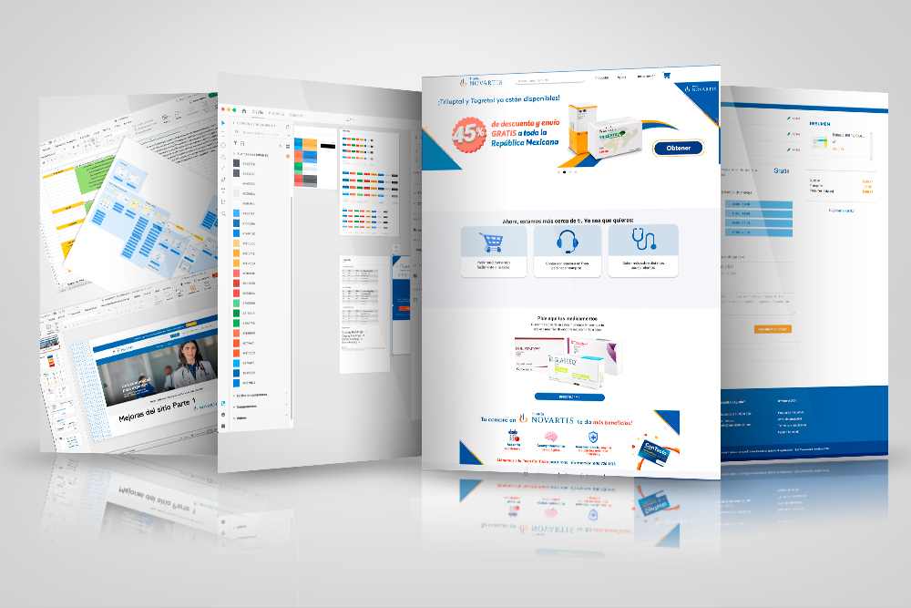

Novartis · Tienda Novartis (e-commerce de medicamentos)
Identifiqué, mapeando yo misma el flujo de compra, que en ningún punto del proceso se comunicaba al cliente cuándo recibiría su factura — y diseñé la solución de comunicación junto con mi jefa.

Muchos de los medicamentos de la Tienda Novartis son costosos y están cubiertos por aseguradoras que requieren la factura para reembolsos — no es un detalle administrativo menor. En una reunión identifiqué que en ningún punto del proceso, ni en el sitio ni en ningún correo, se comunicaba cuándo se emitiría la factura.
Al día siguiente mapeé yo misma el flujo completo de compra y lo confirmé. Pregunté directamente a la agencia que gestionaba el sitio: la factura solo podía emitirse hasta que el cliente tuviera el producto en mano (24 horas después de la entrega, por política de devoluciones) — pero esa razón nunca llegaba al cliente.
La emisión de la factura dependía de un proceso técnico real que no podía modificarse. La solución tenía que ser de comunicación, no de proceso.
Junto con mi jefa, decidimos agregar la explicación del ciclo de facturación en dos puntos de contacto: el correo de confirmación del pedido y la sección de Ayuda del sitio.
Opté por una solución de comunicación —más rápida de implementar— en vez de una de proceso, que hubiera requerido cambiar la lógica técnica de facturación, fuera de mi alcance y tiempo disponible con múltiples tareas de gestión en paralelo.
La solución de comunicación se implementó. No cuantifiqué el volumen de llamadas antes ni después del cambio — no hubo seguimiento formal, en parte porque el proyecto completo quedó luego en manos de una agencia externa.
Mapear el flujo yo misma, en vez de confiar solo en lo que reportaba el Call Center de segunda mano, fue lo que me permitió encontrar la causa raíz real. Es el mismo patrón que después repetí en Remesas, cuando fui a cobrar mi propia remesa como clienta: a veces la mejor investigación es vivir el proceso tú misma.